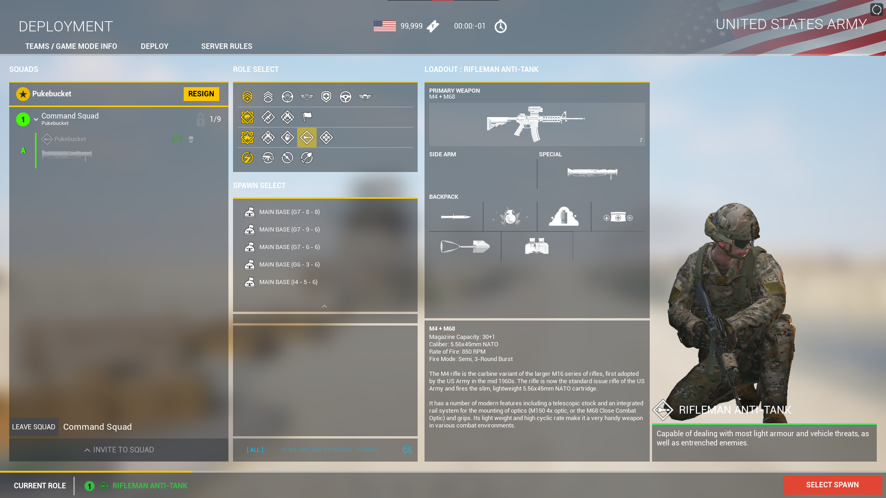

Main strats of the game
Most of the time the best strategies are to try to flank your enemies without them knowing where you are coming from. Sounds simple enough, but to do this you will need a lot of map and game knowledge to actually pull this off succesfully. That is why most of the time the teamleaders (squadleaders and commander) are poeple that have a lot of game knowledge. If you are not very experienced and are not confident in your game sense, you will probably not pick up any of these rolls as other experienced teamleaders will expect you to know how to handle some strategic situations. So if you are new to the game you will most likely be instructed by your squadleader to move to certain positions and shoot and engage at specific timings.

Armor squadleader strats
As a squadleader of an armor squad you are very importaint to the succes of your team. A single armor crew can change the tides in almost any battle and is therefore an essential part of any team. And armor squad is a small squad of almost always 3 members.
- Spotter
- Driver
- Gunner
Each member has a very specific duty.The Spotter spots enemy targets and looks for potential dangers. The Driver drives the vehicle and tries to get in good positions and angles for the shooter to hit targets. And the shooter obviously tries to kill as many enemy targets as possible. Most of the time the shooter is also the squadleader as they are the most importaint and should have the most experience.
Commander strats
The commander is a lonesome role which there is only 1 of each match per team. It is almost the exact same as the infantry squadleader, but has 1 big differance. Which is its Support calls of which there are 4.
- UAV
- Static Artillery Barrage / Creeping Artillery
- A-10 Warthog Airstrike
A-10 Warthog Airstrike

Artillery Barrage from UAV point of view

These support calls can pivot the outcome of any battle. The UAV can reveal enemy positions and inplacements. The Barrage's can destroy any FOB and vehicle in seconds and whipe out entire squads. The A-10 Warthog is an iconic American aircraft which is known for its pricise destructive power and its icon BRRRRRRRRT sound that the main cannon makes. Mostly used to take out static vehicles or implacements
Communication (Comms)
Communication is mostly self explanitory, Your squadleader tells you to go there or to get down and you just do as your told. But some terms that might be used when you first start playing this game are very confusing. For example:"I need the HAT's and LAT's to resupply of the FOB and take out that BMP while I get on the TOW." A lot of these words are acronyms. I'll give some of the most used examples and what they mean.
- HAT
Means Heavy Anti Tank, and is the Kit that has the most destructive weaponry against tanks with the Tandem round. So if your squad leader ask's for a HAT or Tandem, then they are reverring to the player with that kit.
- LAT
This is the Light Anti Tank, so the player with a "normal" rocket launcher round.
 - FOB and HAB
A lot of poeple confuse these 2 terms. FOB is a Forward Operating Base and is looks like a radio station like this image below. The HAB is Hesco Armored Base, and is the spawnpoint created within the radius of a FOB.
- TOW (ATGM/Kornet)
TOW is the most commenly used term and this stands for Tube-launched Optically-tracked Wire-guided. And is an emplacement capable of launching a Big rocket meant for the destruction of hostile vehicles